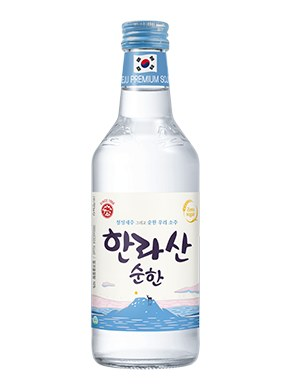

대한민국
소주
가이드
둘러보기
빠른 찾기
타임라인
지역별 브랜드
제조사 현황
제조 방법
한라산 순한
무가당 제로슈거, 21도와 함께 현 2종 체제(2019년 한라산17 대체)

분류
희석식
도수
16도
출시
2023.05.10
제조사
한라산소주
지역
제주도
이름 유래
한라산
브랜드명 +
"순하다"
를 결합해 저도수 라인을 직관적으로 표기. 2019년 출시된 "한라산17"(17도)을 4년 만에 대체한 후속 라인.
상세 연혁
무가당 제로 슈거. 2023년 5월 한라산17(17도)을 단종하고 도수를 낮춰 출시. 한라산21과 함께 운영되는 현 2종 체제의 저도수 버전.
한라산소주의 다른 소주
한일소주
한라산물 순한소주
한라산 현미소주
올래소주 (한라산 올래)
한라산21
오늘도 부드럽게 오름
허벅술
한라산1950
지역별 소주 브랜드 전체 보기 →